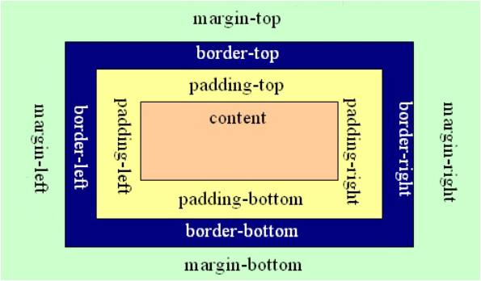
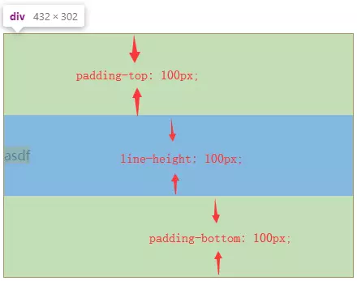
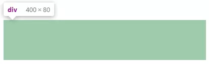
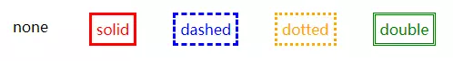
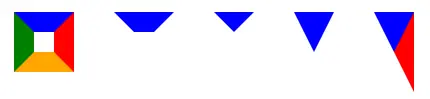
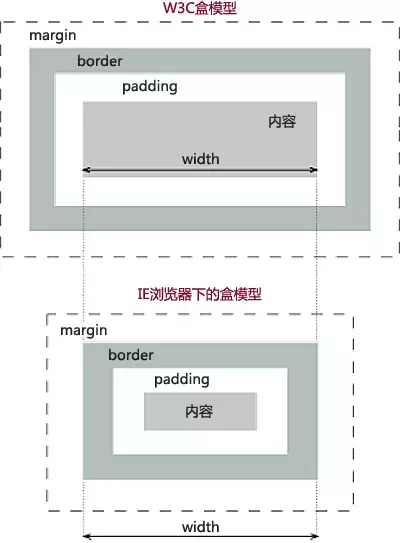

理解盒模型
前言
CSS 盒模型本质上是一个盒子，封装周围的 HTML 元素，它包括：边距 margin，边框 border，填充 padding，和实际内容 content。盒模型允许我们在其它元素和周围元素边框之间的空间放置元素。

内容
一、块容器盒
只包含其它块级盒，或生成一个行内格式化上下文(inline formatting context)，只包含行内盒的叫做块容器盒子。
二、块盒
同时是块容器盒的块级盒称为块盒。
三、行盒
行盒由行内格式化上下文产生的盒，用于表示一行。在块盒里面，行盒从块盒一边排版到另一边。当有浮动时，行盒从左浮动的最右边排版到右浮动的最左边。
四、盒子四大家族
4.1 content
对于非替换元素如div，其content就是 div 内部的元素。而对于替换元素，其content就是可替换部分的内容。
CSS 中的content属性主要用于伪元素:before/:after中，除了做字体库或少写个 div，对于一般开发来说并无卵用。
4.2 padding
padding是四大金刚中最稳定的了，少见有什么异常。尽管如此还是有些需要注意的地方：
4.2.1 大部分情况下我们会将元素重置为box-sizing:border-box，宽高的计算是包含了padding的，给人一种padding也是content box一部分的感觉，好像line-height属性也作用于padding上。但实际上，元素真正的内容的宽高只是content box的宽高，而line-height属性是不作用于padding的。

4.2.2 padding不可为负值，但是可以为百分比值。为百分比时水平和垂直方向的padding都是相对于父级元素宽度计算的。将一个div设为padding:100%就能得到一个正方形，padding:10% 50%可以得到一个宽高比 5:1 的矩形。
body {
width: 400px;
}
.box {
padding: 10% 50%;
}
2
3
4
5
6
7

4.2.3 padding配合background-clip属性，可以制作一些特殊形状：
/*三道杠*/
.icon1 {
box-sizing: border-box;
display: inline-block;
width: 12px;
height: 10px;
padding: 2px 0;
border-top: 2px solid currentColor;
border-bottom: 2px solid currentColor;
background: currentColor; /*注意如果此处背景颜色属性用缩写的话，需要放到其他背景属性的前面，否则会覆盖前面的属性值（此处为background-clip）为默认值*/
background-clip: content-box;
}
/*双层圆点*/
.icon2 {
display: inline-block;
width: 12px;
height: 12px;
padding: 2px;
border: 2px solid currentColor;
border-radius: 50%;
background-color: currentColor;
background-clip: content-box;
}
2
3
4
5
6
7
8
9
10
11
12
13
14
15
16
17
18
19
20
21
22
23
预览如下：
4.3 margin
4.3.1 作为外边距，margin属性并不会参与盒子宽度的计算，但通过设置margin为负值，却能改变元素水平方向的尺寸：
<div>asdf</div>
<style>
div {
margin: 0 -100px;
}
</style>
2
3
4
5
6
此时div元素的宽度是比父级元素的宽度大200px的。但是这种情况咐发生元素是流布局的时候，即元素width是默认的auto并且可以撑满一行的时候。如果元素设定了宽度，或者元素设置了float:left/position:absolute这样的属性改变了流体布局，那么margin为负也无法改变元素的宽度了。
4.3.2 块级元素的垂直方向会发生margin合并，存在以下三种场景：
- 相邻兄弟元素之间
margin合并； - 父元素
margin-top和子元素margin-top，父元素margin-bottom和子元素margin-bottom; - 空块元素自身的
margin-top和margin-bottom合并
要阻止margin合并，可以使用以下方法
把元素放到
bfc中；设置
border或padding阻隔margin;用内联元素阻隔；
给父元素设定高度
4.3.3
margin的百分比值跟padding一样，
<div class="box">
<div></div>
</div>
<style>
.box{
overflow: hidden;
background-color: lightblue;
}
.box > div{
margin: 50%;
}
</style>
2
3
4
5
6
7
8
9
10
11
12
4.3.4 能在块级元素设定宽高之后自动填充剩余宽高。margin: auto 自动填充触发的前提条件是元素在对应的水平或垂直方向具有自动填充特性，显然默认情况下块级元素的高度是不具备这个条件的。典型应用是块级元素水平局中的实现：
display: block;
width: 200px;
margin: 0 auto;
2
3
auto 的特性是，如果两侧都是 auto，则两侧均分剩余宽度；如果一侧 margin 是固定的，另一侧是 auto，则这一侧 auto 为剩余宽度。栗子：
4.4 border
border主要作用是做边框。border-style属性的值有none/solid/dashed/dotted/double等，效果如下：

border-width属性的默认值是3px，值得注意的是，border-color默认是跟随字体的颜色，相当于默认设置了border-color: currentColor一样。
border另一广受欢迎的功能就是图形构建，特别是做应用广泛的三角形，其原理可看下图
div{
float:left;
margin:20px;
}
div:nth-child(1){
width:20px;
height:20px;
border:20px solid;
border-color:blue red orange green;
}
div:nth-child(2){
width: 20px;
height: 20px;
border: 20px solid;
border-color: blue transparent transparent transparent;
}
div:nth-child(3){
border: 20px solid;
border-color: blue transparent transparent transparent;
}
div:nth-child(4){
border-style: solid;
border-width: 40px 20px;
border-color: blue transparent transparent transparent;
}
div:nth-child(5){
border-style: solid;
border-width: 40px 20px;
border-color: blue red transparent transparent;
}
2
3
4
5
6
7
8
9
10
11
12
13
14
15
16
17
18
19
20
21
22
23
24
25
26
27
28
29
30

其实就是将其他三个边框的颜色设置透明，并把宽高设为 0。是通过调整边框宽度和颜色调整三角形的形状，把最后一个图的红色改为蓝色，则是一个直角三解开了。
五、理解 box-sizing

box-sizing，顾名思义，其作用与设置 CSS box 的尺寸大小有关，而 CSS box 又可细分为:
content-box(W3C 盒模型，又名标准盒模型)：content areapadding-box(IE 盒模型，又名怪异盒模型)：content area + padding area- border-box(=content area + padding area + border area)
- margin-box(=content area + padding area + border area + margin area)
5.1 box-sizing 应用场景
- border-box 属性在 form 上的使用
当我们在要做一个登陆页面的时候，这时候就需要表单和按钮这些元素 首先我们在 div 中设置两个表单，一个用来输入用户名，一个用来输入密码，同时还有一个登录按钮， 当我们想让这两个表单和一个登录按钮的长度相同时，我们试着把她们三个的 width 的值设置为 100% 但她们的长度并不一致，表单和按钮的 padding，border 值不统一，这时我们给表单的属性中添加一个 box-sizing：border-box，此时表单和按钮的长度保持一致 当不给表单添加 box-sizing：border-box 时，而是添加一个 padding 值会发现表单的长度都有所增加 当给按钮添加 padding 时，她的长度并不会改变，由此可以看出表单默认为 content-box，按钮 submit 默认为 border-box，button 的默认值也为 border-box
- border-box 属性在盒子中的使用
当我们设置一个宽度为 500px 的盒子，在里面放入四个盒子，分别为上(width:100%)，中左(width:60%)，中右(width:40%)，下(width: 100%)，此时在大盒子里面四个盒子排列的很整齐 这是我们给上盒子设置一个 padding 或者 border 为 5px，这时上盒子的长度就会超出大盒子的宽度，此时我们给上盒子添加 box-sizing：border-box，就可以使他的宽度不超出
参考资料
- 《CSS 世界》
- 【第 1234 期】前端布局基础概述
- 谈谈一些有趣的 CSS 题目（11）-- IFC、BFC、GFC 与 FFC 知多少
- 尖刀出鞘的 display 常用属性及 css 盒模型深入研究
- 理解 boxsizing
联系作者
平凡世界，贵在坚持。